ƒекабрь 2007
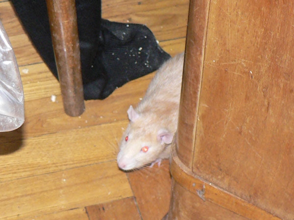
Ёрик на прогулке.
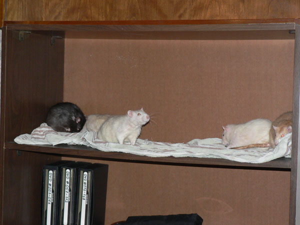
¬с€ крысоста€ выселена на полку, пока клетка приводитс€ в пор€док.
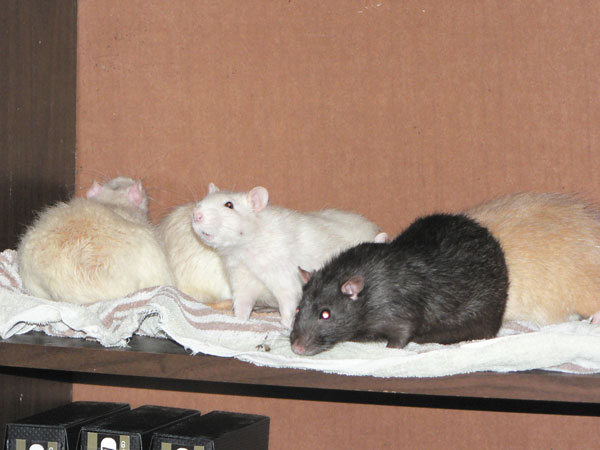
—лева направо: ≈рофей, ѕартизан (кучочек), ≈нисей, ƒжонни, Ёрик
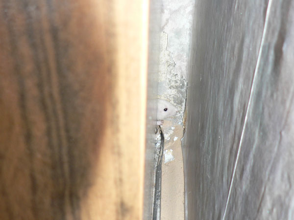
≈нисей удрал на пол и первым делом подрал обои за шкафом.
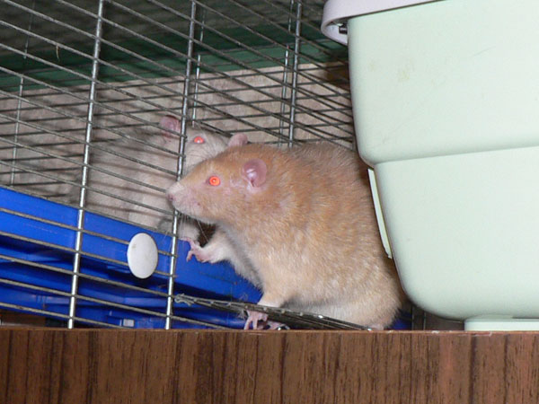
ѕартизан Ёрику: Ч ≈нисей говорил, что построил
гнездо под шкафом.
Ѕудешь на полу Ч пользуйс€.
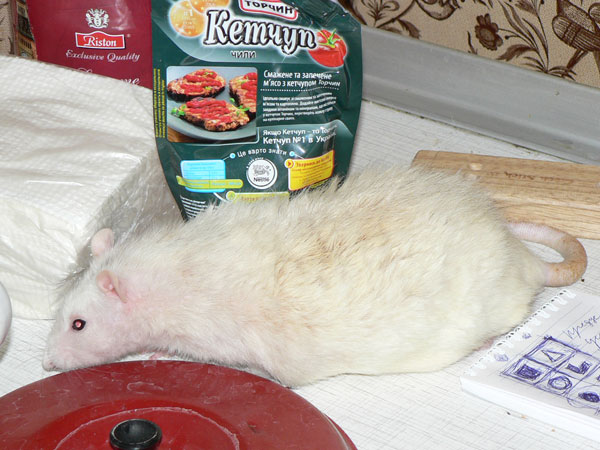
≈рофей на кухне с инспекторской проверкой.
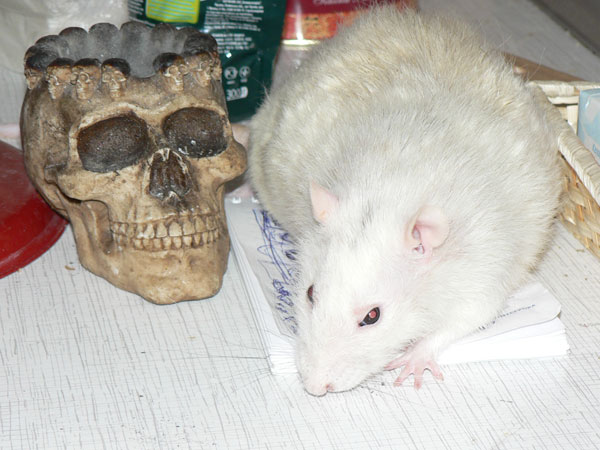
≈рофей: Ч ј что тут за записи? Ќужно охран€ть?
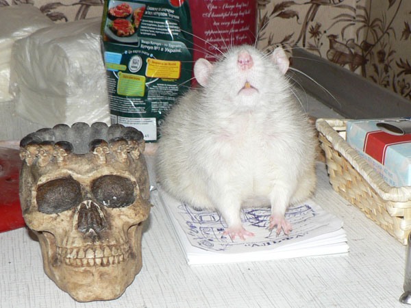
≈рофей: Ч “ак € фотогеничен?
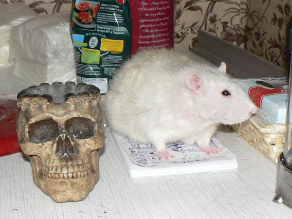
≈рофей: Ч ƒа, и в профиль теперь щелкните!
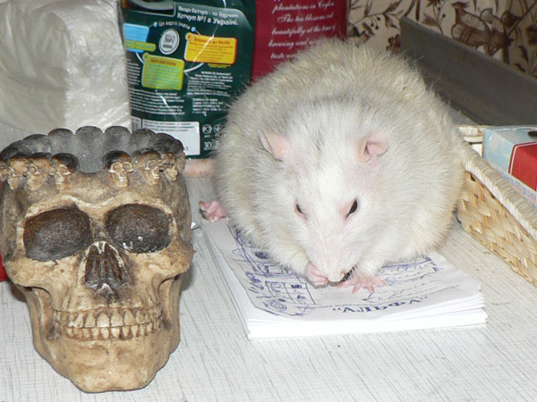
Ч ¬се, теперь можно умыватьс€.
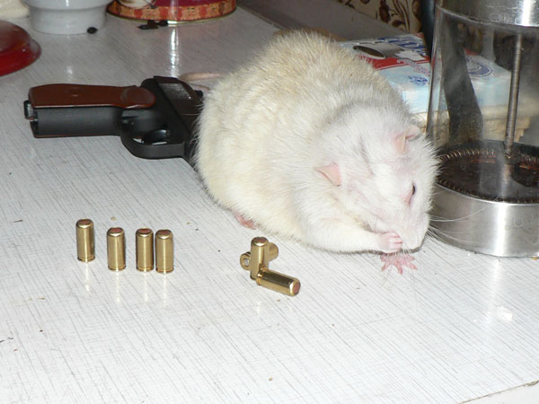
≈рофей: Ч Ќичего не вижу, что тут лежит.
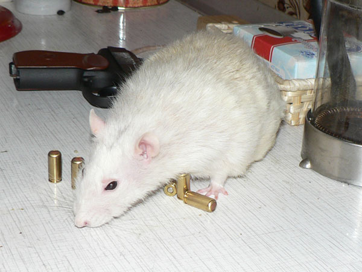
Ч Ќо все же любопытно...
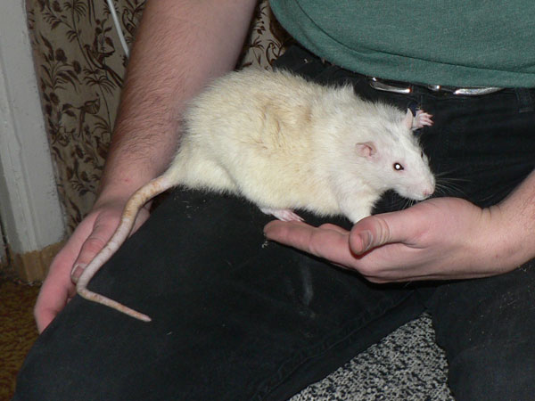
≈рофей: Ч Ќа гост€х удобно сидеть, да.
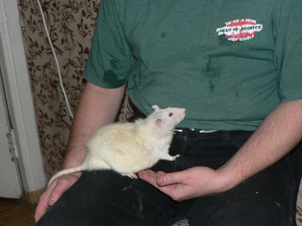
Ч ј что значит "Ќебо не двоитс€"?
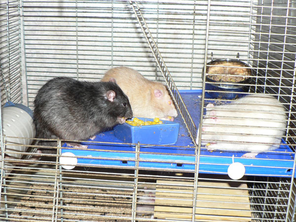
ƒжонни, Ёрик и ѕартизан.
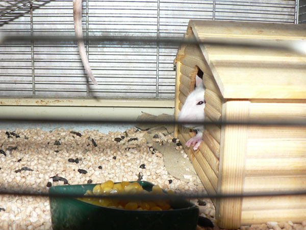
≈рофей в персональном домике, наверх он уже не ходит :-\
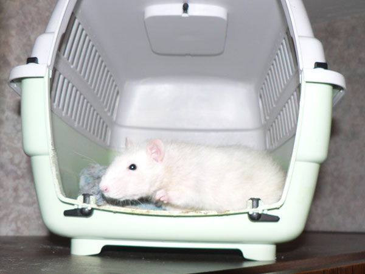
≈нисей на даче.
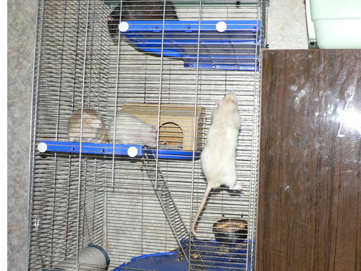
ѕартизан отрабатывает передвижение снаружи клетки,
Ёрик и ≈нисей наблюдают.
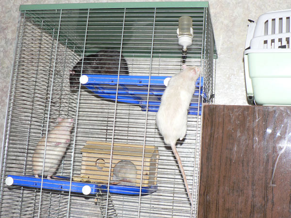
Ёрик: Ч ”х ты, высоко забралс€!
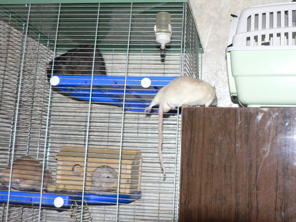
ѕартизан: Ч ¬се, долез!
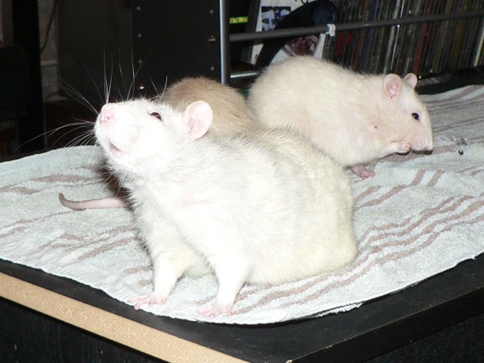
≈рофей: Ч ј чем это пахнет?
(на заднем плане ≈рофей и спина Ёрика)
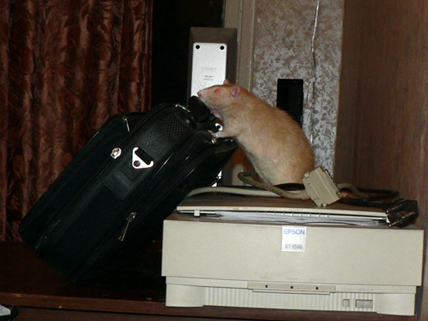
Ёрик: Ч ј что у вас в чемодане-то?
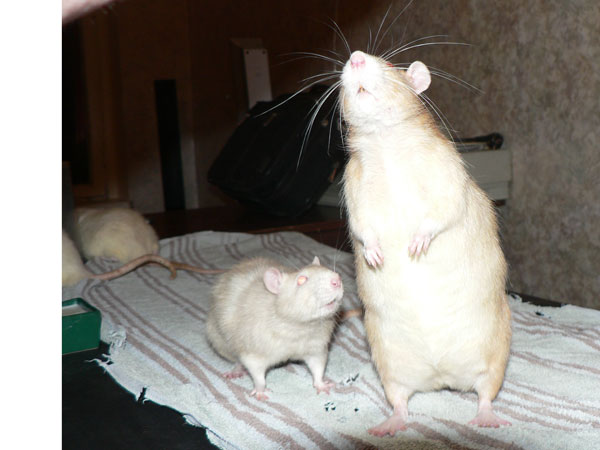
ѕартизан: Ч Ёрик, что ты там наверху унюхал?
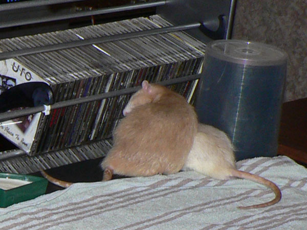
Ёрик и ѕартизан зелегли спать.
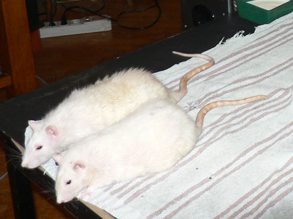
≈рофей и ≈нисей. –одные брать€.